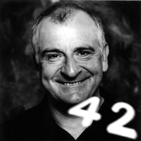

Douglas Adams 2001. május 11-én távozott az élők sorából, de szerintem csak hazament a Betelgeuse mellé, egy kis bolygóra. Minden esetre leghíresebb műve a GALAXIS Útikalauz stopposoknak című regény, ami egy ötkötetes trilógia első része.

Lelkes rajongók alapították meg a Törülközőnapot, amit pontosan minden évben, Adams halálának napja után két héttel, május 25-én tartanak az író tiszteletére. Ezen a napon fanatikus stopposok törülközővel mászkálnak az utcán. Idén én is ezt fogom tenni. Íme néhány fontos tény a törülközőről:
A GALAXIS Útikalauz érdekes dolgokat közöl a törülközőkről. A törülköző, írja az Útikalauz, a lehető leghasznosabb dolog, amit csak magával vihet a csillagközi stoppos. Egyrészt komoly gyakorlati értéke van: beletakarózhatunk, hogy meleghez jussunk, míg átugrándozunk a Jaglan-Béta hideg holdjain; heverhetünk rajta, míg a Santagrinus-V ragyogó, márványhomokos tengerpartjin szívjuk a sűrű tengeri levegőt; felvitorlázthatjuk vele minitutajunkat, míg lefelé sodródunk a lassú, lomha Moth folyón; takarózhatunk vele, miközben Kakrafoon sivatagainak vörös csillagai ragyognak ránk; megnedvesíthetjük és fegyverként használhatjuk kézitusában; fejünkre tekerhetjük, hogy távol tartsuk a mérges gőzöket, vagy hogy elkerüljük a Traal bolygó Mohó Poloskapattintó Fenevadjának pillantását (észvesztően ostoba állat, azt hiszi, ha ő nem lát téged, te se látod őt – annyi esze van, mint egy cipőtalpnak, de nagyon-nagyon mohó); veszély esetén vészjelzéseket adhatunk vele, és természetesen beletörölközhetünk, ha még elég tiszta hozzá.
Másrészt, és ez a fontosabb, a törülközőnek roppant pszichológiai jelentősége van. Miért, miért nem, ha a strag (strag: nem stoppos), észreveszi, hogy a stopposnak van törülközője, azonnal föltételezi, hogy fogkeféje, arctörlője, szappana, doboz kétszersültje, kulacsa, iránytűje, kötélgombolyagja, szúnyogriasztója, esőkabátja, űrruhája stb. is van. Sőt a strag boldogan odakölcsönzi a stopposnak a felsoroltak vagy egy tucat egyéb tétel bármelyikét, melyet a stoppos véletlenül “elvesztett”. A strag úgy gondolkodik, hogy aki széltében-hosszában bejárja stoppolva a galaxist, nomádul és csövezve és, hihetetlen nehézségekkel néz farkasszemet, és győz, és még azt is tudja, hogy hol a törülközője – az igazán olyan valaki, akit komolyan kell venni.
Innen ered a kifejezés, mely a stoppos szlengbe is átkerült már:
– Hej, helltél már azzal a klufi Ford Prefecttel? Az a sahár, mindig tudja, hol a törülközője!
(Hellni: megsimerkedni, beszélgetni, találkozni, lefeküdni valakivel; klufi: nagyszerű, belevaló fickó; sahár: igazán nagyszerű, belevaló fickó.)
Megyek, keverek egy Pángalaktikus Gégepukkasztót. Douglas Adamsre! Belgium.